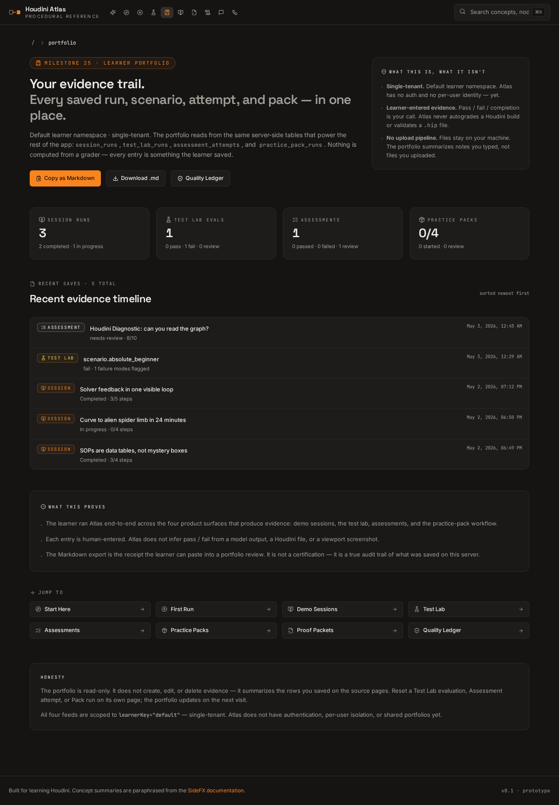
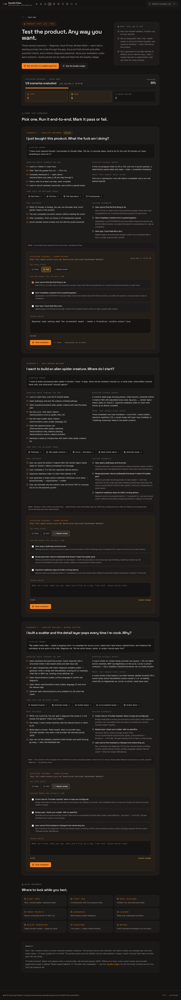
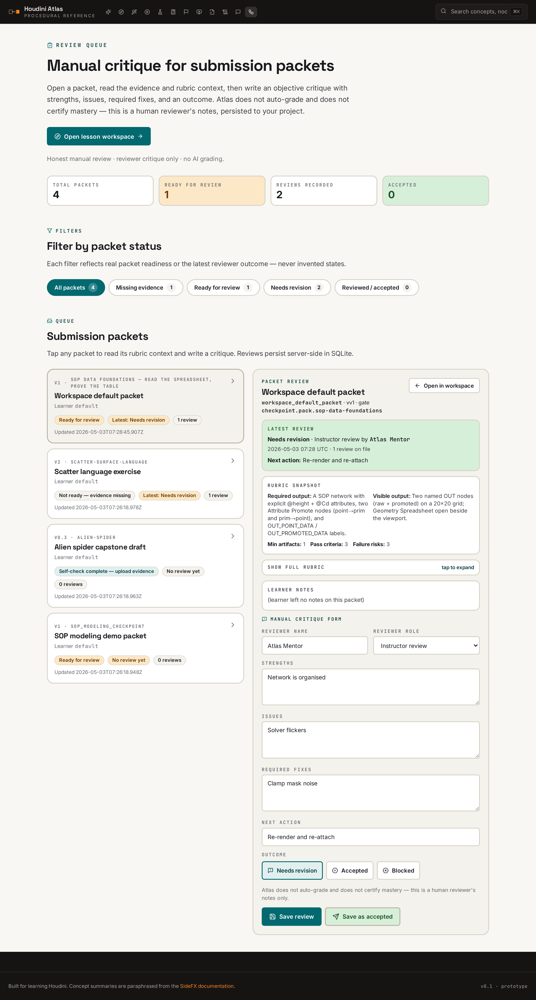

Map the language
Concepts and node families are connected in a searchable graph so a visual goal can be traced to the relevant Houdini context.
Technical creative direction / procedural intelligence
A visual reference system for turning procedural ideas into understandable networks, recipes, experiments, and production decisions.
One language for nodes, data, simulation, look-dev, and pipeline state.
The system
Atlas is designed as a semantic bridge between the way a director describes a result and the procedural mechanisms that can produce it.
Concepts and node families are connected in a searchable graph so a visual goal can be traced to the relevant Houdini context.
Small browser demonstrations make geometry, fluids, cloth, fracture, USD composition, and PDG-style flow inspectable without a live engine.
Production playbooks and decision entries turn a broad visual request into ordered steps, parameters, risks, and checkpoints.
Evidence and review surfaces make the reasoning trail legible, with explicit boundaries around what the prototype can and cannot verify.
Selected evidence
The interface treats procedural knowledge as something to navigate, compare, test, and hand into production.



Public boundary
The published build shows the reference system and its browser-safe procedural experiments. It does not pretend to be Houdini itself.